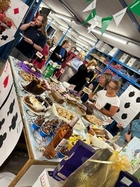
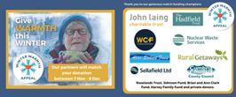
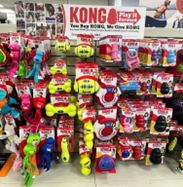
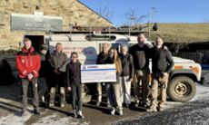
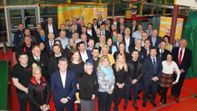
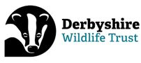
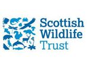

Charitable Blog
WCF - Giving Back to the local community
Collaboration is one of our 5 key Guiding Principles at WCF, whether that’s between employee owners, building meaningful supply partnerships or working to help the local rural communities in which the majority of our businesses are based. There are various ways we choose to support local charities.
Supporting the efforts of our employee owners
The company operates a matching policy on behalf of the employee owners who take the time to organise an event or participate in any fundraising activity. Whatever is raised the company doubles. This ranges from McMillan coffee mornings, through to fun events for Comic Relief and Children in Need, Christmas Jumper days and lots of others. Employee owners can also use the company app to seek donations or promote their event.

Celebrating their long service
For 20 and 30 long service celebrations WCF offers the employee owner the chance to nominate a charity of their choice and donates £200 or £300 on their behalf. For other milestone celebrations if the employee owner opts for a charitable donation instead of a gift the company doubles the amount paid over on their behalf. We have supported charities such as Eden Valley Hospice, special care baby unit, air ambulance and mountain rescue organisations in this way.
Winter Warmth Appeal
WCF have supported Cumbria Community Foundation’s Winter Warmth Appeal as a Match Funding Champion since 2018. The appeal, which encourages those in receipt of the government’s £200 fuel payment to donate it to those in need has raised hundreds of thousands of pounds for people living in fuel poverty across Cumbria. Our Managing Director Jo Ritzema says on their website “With so many homeowners facing financial pressures as a result of rising fuel bills, the Winter Warmth Appeal is such an important way to help keep Cumbrian families in fuel poverty warm and safe this winter. Allan Stobart Fuels is one of Cumbria’s largest oil distributors and WCF are proud to support this appeal financially, as well as prioritising vulnerable customers when it comes to making heating oil deliveries in cold weather conditions”.

Giving back through our stores
Our 8 WCF Pet & Equestrian stores have each nominated a local charity to support in store. Charity bags are available for customers to purchase and donate at check out. The stores also participate in the Kong Play It Forward Scheme, where for every Kong toy purchased the company donate another to the nominated charity. Through this we support charities such as Animal Welfare Furness and Eden Animal Rescue.
Each of the stores is active in their local community, supporting country shows with sponsorship and providing product that is nearing the end of its shelf life to local organisations as well as donating products to organisations such as Newton Rigg Equestrian Training and Events.

In 2021 we were one of a number of local companies who donated large sums of money to save the Lake District Calvert Trust as it was forced to near closure as a result of Covid.
Meaningful Partnerships
Our campsite at Herding Hill Farm has supported the North of Tyne Mountain Rescue for a number of years. At various times the site offers activities to guests free of charge but encourages them to make a donation, which WCF then match. This includes children’s craft mornings as well as the popular Bonfire weekend. The charity also supports the site by bringing vehicles and equipment for guests to view. In 2022 WCF donated funds to allow the charity to purchase a StarLink RV satellite to facilitate communications when a normal phone signal may not be available. Read More.

WCF Chandlers have been supporting the Lincs & Notts Air Ambulance for several years, from office fund-raising including hair-raising events such as leg waxing, through to supporting the charity collect donations from the general public on streets and in stores around the county.
WCF, as a Silver Patron, is proud to be one of 150 local businesses supporting the Carlisle Youth Zone. The Youth Zone provides a safe meeting place for young people in Carlisle, particularly those from disadvantaged backgrounds. We support their fund-raising on a regular basis by providing charity auction and raffle prizes such as P&E store vouchers or a hot tub stay at one of our campsites.

Wildlife Trust Partners
Each of our 3 5-star campsites are a corporate supporter of their local wildlife trusts, with representatives from the Northumberland Wildlife Trust, Scottish Wildlife Trust and Derbyshire Wildlife Trust visiting the sites on a periodic basis to teach us about bio-diversity. Members of Cumbria Wildlife Trust can also be found fund-raising in our P&E stores on a regular basis.


< Previous Article
Supporting Young Talent in our Communities